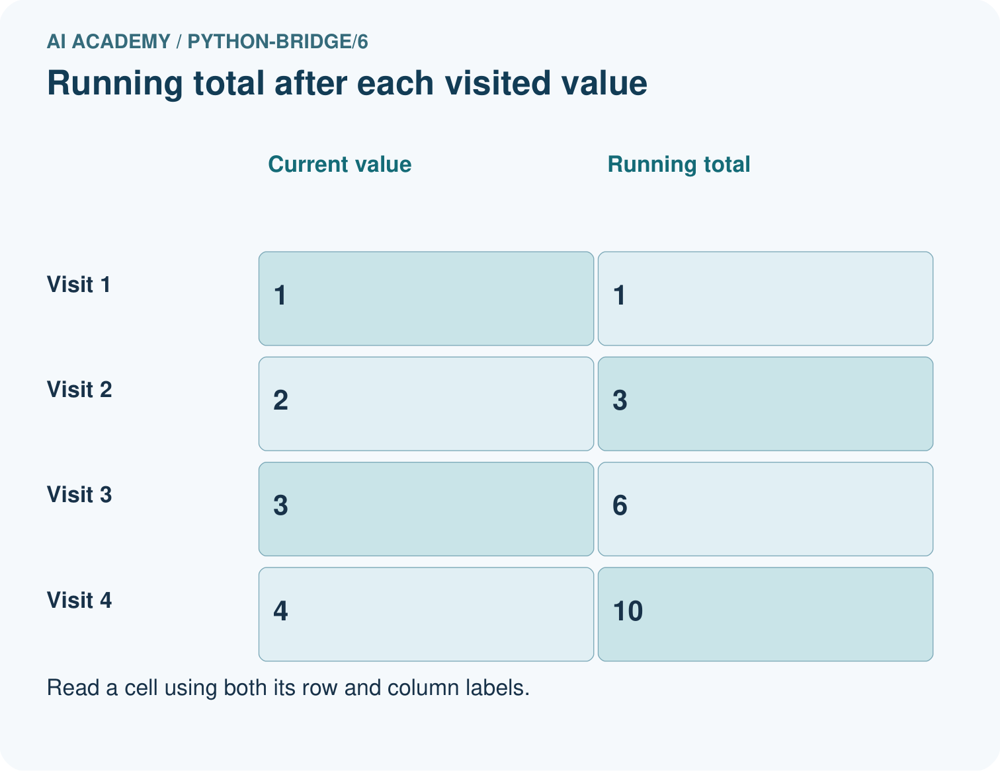
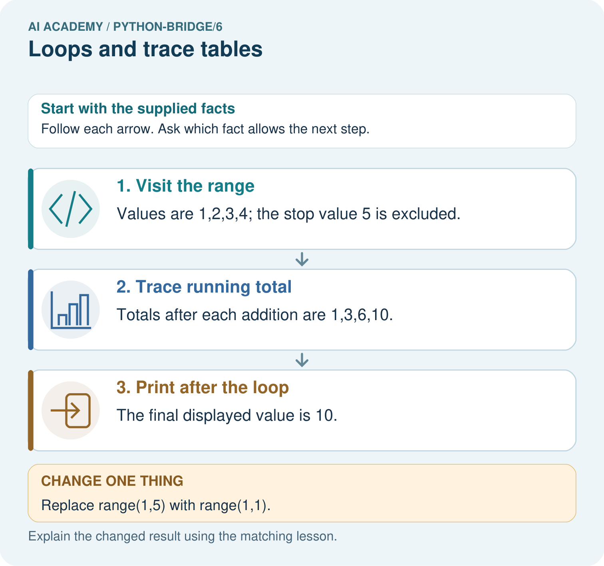

AI Academy · Python readiness bridge · Student lesson
Loops and trace tables
Learn to understand, design, build, test and explain AI systems responsibly.
Project: Python readiness portfolio
Before you start
Starting with total = 2, what does total = total + 3 store?
Plan time to read, investigate and explain. Keep predictions separate from observations.
Student lesson · 1 of 16
Your mission
Your learning target
I can trace variable values before and after each loop iteration.
I can use the excluded stop value in range correctly.
I can explain initialization and test zero one and several iterations.
Remember before reading
Close your notes first. A rough first answer helps us choose the right starting point; it is not a score for your ability.
Without opening the old lesson, explain one key idea from Branching and boundary tests. Give an example and a mistake that the idea helps you avoid.
Without opening the old lesson, explain one key idea from Expressions and operator order. Give an example and a mistake that the idea helps you avoid.
After trying, check the relevant lesson or ask your teacher. Change the part of your explanation that the evidence shows was wrong.
This week you will practise:
Trace variable values before and after each loop iteration
Use the excluded stop value in range correctly
Explain initialization and test zero one and several iterations
Retrieve what you already know
Starting with total = 2, what does total = total + 3 store?
This week’s end goal
Trace loops and trace tables and explain the changed program before running it.
Student lesson · 2 of 16
Notice the evidence
Imagine adding numbered counters: first 1, then 2, then 3. A loop can repeat the same addition with a different number each time. This week you will predict each change before running a short Python script. Tracing repeated calculations prepares you to inspect the data processing used in larger AI applications.
In for turn in range(1, 4), Python supplies 1, 2 and 3 in order. The start is included and the stop is excluded. The indented body runs once for each supplied value. The colon and four-space indentation mark that body. This lesson uses integer range values with the default positive step of 1.
Student lesson · 3 of 16
See how it works
total = 0
for turn in range(1, 4):
total = total + turn
print(total)State after each addition
The output is 6. Before the first iteration, total is 0. Each assignment reads the previous total and adds the current turn. After turn 3, the range is exhausted, so execution continues after the loop. The table records state; it does not create extra instructions.
Connect the picture and the explanation
Point to the input, the deciding step and the result in this week’s visual. Explain the same step in ordinary words. A picture helps when you can say what each part represents.
Student lesson · 4 of 16
Compare the cases
Compare a familiar case with a changed case
Copy the worked script. Change the range to range(2, 5). Record turn, total before and total after each iteration. Predict the single output, then run and compare.
Change one thing in the pictured case
Change: Replace range(1,5) with range(1,1).
Prediction: No values are visited and the final output is 0.
Reason: The accumulator starts at zero and an empty loop never changes it.
Student lesson · 5 of 16
Words that unlock the idea
| Word | Meaning |
|---|---|
| Loop | A block of instructions that can run repeatedly |
| Iteration | One execution of a loop body |
| Accumulator | A variable that keeps a running result |
| Initialization | Giving a variable its starting value |
| Trace table | A record of variable values as instructions execute |
Student lesson · 6 of 16
Follow a worked example
| Range expression | Values supplied | Number of iterations |
|---|---|---|
| range(1, 4) | 1, 2, 3 | 3 |
| range(1, 2) | 1 | 1 |
| range(1, 1) | No values | 0 |
| range(4) | 0, 1, 2, 3 | 4 |
With one argument, range starts at zero. range(4) supplies four values but none is 4. If the worked script uses range(1, 1), the body never runs and the initialized total remains 0. Do not rely on a variable first assigned inside a loop: a zero-iteration run might never assign it.
Learn from the worked case
Cover the result before checking it. Say what is given, choose the procedure, and follow one step at a time. Then uncover the result and explain your first mismatch. Ask why a step is allowed, not only what number it produces.
A pictorial worked case: Loops and trace tables
Accumulate a short range. A running total adds the integers visited by range(1,5).
The facts we will use
Python 3: total=0; for value in range(1,5): total+=value; print(total). The print is after the loop.


Read the picture one step at a time
Why this result follows
A loop repeats an operation for each visited value. A trace table distinguishes the current value from the accumulator; the range stop is not included.
What this example does not establish
This bounded loop does not train an AI model; other loop conditions may require separate termination checks.
Read the labelled picture: List the four visited values and their running totals. Explain why 5 is absent and what prints for range(1,1).
Change one thing: Replace range(1,5) with range(1,1). Predict the result before checking the explanation. What remains the same?
Student lesson · 7 of 16
Find and repair a mistake
total = 0
for turn in range(1, 4):
total = 0
total = total + turn
print(total)This faulty version prints 3. The extra reset discards earlier additions on every iteration. Remove the indented reset while keeping initialization before the loop. Then test zero, one and several iterations: the one-iteration case alone cannot reveal this reset bug.
Moving print(total) into the correct loop produces three lines, 1 then 3 then 6. Moving it out produces only the final 6. Trace both values and output events. A loop follows written instructions; repeating them does not make the program learn.
Locate the earliest unsupported step
For the faulty script with range(1, 4), record total after each addition. Explain the wrong final output and remove only the faulty reset.
Student lesson · 8 of 16
Practise together
List the values supplied by range(2, 5) and explain why 5 is absent. How many times does its body run?
Practise with less help: Trace before running
Use workbook W2 for the connected example “Loops and trace tables”. First fill the input and rule boxes. Try the middle steps before asking for a hint. After a hint, try the next step yourself.
| Plan | Do | Check |
|---|---|---|
| What is given? Which rule or procedure applies? | Record each intermediate step. | Does the result follow? What remains unknown? |
Explain your trace to a partner. Your partner points to one step to check. Swap roles on the next case. Each person writes their own explanation.
Check your reasoning
Use the worked case for Loops and trace tables. Proposed explanation: “The stop value is included”. Decide whether this explanation is supported. Point to the step or supplied fact that decides; explain your repair if needed.
Answer on your own before discussion. If you are unsure, say which step you need help with.
Explain the picture
List the four visited values and their running totals. Explain why 5 is absent and what prints for range(1,1).
This is supported practice. Keep the separately named independent case for an attempt before feedback.
Student lesson · 9 of 16
Run the investigation
Predict, investigate and preserve the evidence
Copy the worked script. Change the range to range(2, 5). Record turn, total before and total after each iteration. Predict the single output, then run and compare.
total = 0
for turn in range(1, 4):
total = total + turn
print(total)total = 0
for turn in range(1, 4):
total = 0
total = total + turn
print(total)| Record | Your evidence |
|---|---|
| Given input and fixed rule | |
| Prediction before checking | |
| Actual result, or “not run” | |
| First mismatch and one explanation | |
| Boundary or missing input and expected response |
On paper, trace the supplied procedure. If code is provided, predict before running it in a local practice file. Never write an expected answer as though it were an observed run.
Plan → try → check
Before trying: what do I expect, and why? While trying: which step could first go wrong? Afterwards: what did I actually observe, and what should change? Keep “not run” if you only traced the procedure.
Student lesson · 10 of 16
Build your understanding
Explain → apply → challenge
List the values supplied by range(2, 5) and explain why 5 is absent. How many times does its body run?
For the faulty script with range(1, 4), record total after each addition. Explain the wrong final output and remove only the faulty reset.
In your counter script, range(-2) performs no iterations. Does returning the initial 5 make negative rounds valid? Explain what the script checks and what it assumes.
Student lesson · 11 of 16
Connect your project
Add a labelled loops and trace tables evidence sheet to Python readiness portfolio. Show how you can trace variable values before and after each loop iteration. Use the supplied fictional case and keep its inputs, intermediate steps, calculation or prediction, and limitation. Connect this record to last week’s record; a matching answer without a trace is insufficient.
| Project evidence | Record |
|---|---|
| Component and version | |
| Inputs permitted at prediction time | |
| Trace and comparison with earlier work | |
| Failure, limit and human review |
Evidence for your project
For Python readiness before the Responsible Plant Classifier, retain a trace of the values, the predicted outputs and the changed-case explanation. Use actual Python 3 results to check the prediction after reasoning first.
Student lesson · 12 of 16
Show what you know
Write the expected range values and trace table before running. Keep predicted and observed output separate, then explain the first row where they differ. For a loop that should add a fixed amount repeatedly, zero iterations should preserve the initial amount. One iteration checks one update; several check accumulation.
In your counter script, range(-2) performs no iterations. Does returning the initial 5 make negative rounds valid? Explain what the script checks and what it assumes.
Student lesson · 13 of 16
Study a complete case
Complete evidence record
State after each addition
Follow the input through the stated procedure to its result. Cover the result first, predict it, then explain every intermediate step. The text/table accompanies the figure so the example can be read without colour.
Student lesson · 14 of 16
Try a new case independently
Independent case: Count iterations and a stopping point
List every value visited and each running total. Then predict the result for range(2,2).
total = 0
for value in range(2, 6):
total = total + value
print(total)
Attempt this case before feedback. Record any help. Earlier examples below are further practice; a case already practised with feedback cannot establish fresh transfer.
Attempt this without hints
A box starts with 5 counters. Each round adds 2 counters. Use rounds = 3, an initialized total and for turn in range(rounds). Print the final total once after the loop. Trace the totals and predict fresh runs with rounds 0, 1 and 3. Assume rounds is a nonnegative integer.
Record support used: none, hint or teacher explanation. After feedback, a different case is needed to demonstrate independence.
Use feedback to improve
Attempt the independent case before hints. Record whether you worked alone, used a hint or followed a model. After feedback, fix the first unsupported step and explain why it changed. A later check uses a changed case, not a copied answer.
Student lesson · 15 of 16
Your lesson route
Start with this question: Accumulate a short range. A running total adds the integers visited by range(1,5).
| By the end, I can | How I will show it |
|---|---|
| Trace variable values before and after each loop iteration | Explain the deciding step, show a trace or test, and state one limit. |
| Use the excluded stop value in range correctly | Explain the deciding step, show a trace or test, and state one limit. |
| Explain initialization and test zero one and several iterations | Explain the deciding step, show a trace or test, and state one limit. |
Remember → watch and explain → try with help → investigate → try independently → keep project evidence. Your teacher may spread this lesson across several classes.
Keep your first prediction. Compare it with what the evidence shows and explain any change.
Student lesson · 16 of 16
Finish and return
Close your notes. Explain this goal in your own words: Trace variable values before and after each loop iteration
If you are unsure, return to the worked picture and explain one arrow. If you are ready, change an input or assumption and justify your prediction.
Save your workbook evidence. At the next review, try a different case before opening your old answer.